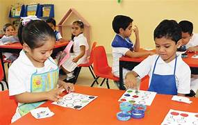
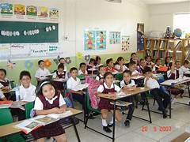
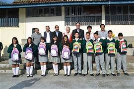

Niveles Académicos
El Colegio Privado Luz de Esperanza ofrece los siguientes niveles académicos:
-
Inicial: Educación preescolar enfocada en el desarrollo integral y el juego educativo.
Estudiantes de Nivel inical Mejorando su aprendizaje -
Primaria: Formación básica con énfasis en competencias fundamentales y valores.
Estudiantes de nivel primario mejorando su intelecto -
Secundaria: Educación orientada a la preparación académica y personal para la vida universitaria y profesional.
Estudiantes de nivel secundaria preaparandose para enfrentar nuevos retos y centrarse en muchos objetivos